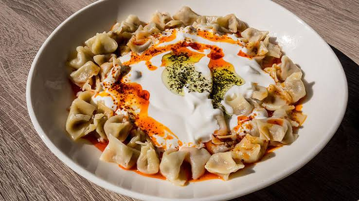

Mantı, Türk mutfağının en bilinen hamur işlerinden biridir. Orta Asya'dan Anadolu'ya uzanan Türk mutfak geleneği içerisinde farklı biçimlerde hazırlanmıştır. Anadolu'nun farklı bölgelerinde mantının şekli, büyüklüğü ve iç harcı değişebilir. Kayseri mantısı ise Türkiye'de en tanınan çeşitlerden biridir. Geleneksel olarak küçük hamur parçalarının kıymalı harçla doldurulup kapatılması ve üzerine sarımsaklı yoğurt ile tereyağlı sos eklenmesiyle hazırlanır.
Yapılışı:
Un geniş bir kaba alınır ve ortası açılır.
Yumurta, tuz ve su eklenerek sertçe bir hamur yoğrulur.
Hamur yaklaşık 20-30 dakika dinlendirilir.
İç harcı için ince doğranmış soğan, kıyma, tuz ve karabiber karıştırılır.
Dinlenen hamur ince şekilde açılır ve küçük kareler halinde kesilir.
Her karenin ortasına az miktarda kıymalı harç konur.
Hamurların köşeleri birleştirilerek mantılar kapatılır.
Hazırlanan mantılar kaynayan tuzlu suda pişirilir.
Ayrı bir kapta yoğurt ve ezilmiş sarımsak karıştırılır.
Tereyağı eritilip salça ve pul biber eklenerek sos hazırlanır.
Haşlanan mantılar tabağa alınır.
Üzerine sarımsaklı yoğurt ve tereyağlı sos dökülerek sıcak servis edilir.
| Malzemeler | Miktar | Ölçü Birimi |
|---|---|---|
| Un | 3 | Su Bardağı |
| Yumurta | 1 | Adet |
| Su | 1 | Su Bardağı |
| Tuz | 1 | Çay Kaşığı |
| Yoğurt | 1,5 | Su Bardağı |
| Sarımsak | 2 | Tane |
| Tereyağı | 2 | Yemek Kaşığı |
| Salça | 1 | Yemek Kaşığı |
| Kıyma | 250 | gram |
| Soğan | 1 | Adet |
| Karabiber | 1 | Çay Kaşığı |

Pizza, özellikle İtalya'nın Napoli kentiyle özdeşleşmiş ve zamanla dünyanın en tanınan yemeklerinden biri haline gelmiştir. Günümüzde bildiğimiz modern pizzanın gelişiminde Napoli önemli bir merkez olmuştur. Başlangıçta daha sade malzemelerle hazırlanan pizza, zaman içerisinde farklı ülkelerde farklı malzemelerle yorumlanmıştır.
Yapılışı:
Ilık suyun içerisine maya eklenerek birkaç dakika bekletilir.
Un geniş bir kaba alınır ve ortası açılır.
Maya karışımı, tuz ve zeytinyağı eklenerek hamur yoğrulur.
Hamur pürüzsüz hale gelene kadar yaklaşık 8-10 dakika yoğrulur.
Üzeri kapatılarak yaklaşık 1 saat mayalanmaya bırakılır.
Domates püresi, sarımsak, zeytinyağı, tuz ve kekik karıştırılarak pizza sosu hazırlanır.
Mayalanan hamur açılarak yuvarlak pizza şekli verilir.
Üzerine domates sosu yayılır.
Mozzarella ve domates dilimleri yerleştirilir.
Pizza önceden yüksek sıcaklıkta ısıtılmış fırında pişirilir.
Fırından çıktıktan sonra üzerine taze fesleğen eklenir.
Dilimlenerek sıcak servis edilir.
| Malzemeler | Miktar | Ölçü Birimi |
|---|---|---|
| Un | 500 | Gram |
| Ilık Su | 325 | ml |
| Kuru Maya | 1 | Paket |
| Tuz | 1 | Tatlı Kaşığı |
| Zeytinyağı | 1 | Yemek Kaşığı |
| Domates Püresi | 1 | Su Bardağı |
| Sarımsak | 1 | Tane |
| Kekik | 1 | Çay Kaşığı |
| Mozzarella Peyniri | 200 | Gram |
| Domates | 1 | Adet |
| Fesleğen | Biraz |

Sushi, Japon mutfağının dünyada en çok tanınan yemeklerinden biridir. Sushi'nin geçmişi bugünkü halinden daha eski bir pirinç ve balık saklama yöntemine kadar uzanır. Zaman içerisinde bu yöntem değişmiş ve Japonya'da farklı sushi türlerinin ortaya çıkmasına zemin hazırlamıştır.
Yapılışı
Sushi pirinci birkaç kez soğuk suyla yıkanır.
Pirinç suyla birlikte tencereye alınarak pişirilir.
Ayrı bir kapta pirinç sirkesi, şeker ve tuz karıştırılır.
Pişen pirince bu karışım eklenir ve nazikçe karıştırılır.
Pirincin oda sıcaklığına gelmesi beklenir.
Sushi matının üzerine bir nori yaprağı yerleştirilir.
Üzerine ince bir tabaka halinde sushi pirinci yayılır.
Ortasına ince doğranmış salatalık, avokado ve seçilen iç malzeme yerleştirilir.
Sushi matı yardımıyla rulo dikkatlice sarılır.
Keskin ve hafif nemlendirilmiş bir bıçakla rulo eşit parçalara bölünür.
Hazırlanan sushi parçaları servis tabağına yerleştirilir.
İsteğe göre soya sosu, wasabi ve zencefil ile servis edilir.
| Malzemeler | Miktar | Ölçü Birimi |
|---|---|---|
| Sushi Pirinci | 2 | Su Bardağı |
| Su | 2,5 | Su Bardağı |
| Pirinç Sirkesi | 3 | Yemek Kaşığı |
| Şeker | 1 | Yemek Kaşığı |
| Tuz | Yarım Çay Kaşığı | Tuz |
| Nori Yaprağı | 4 | Adet |
| Salatalık | 1 | Adet |
| Avakado | 1 | Adet |